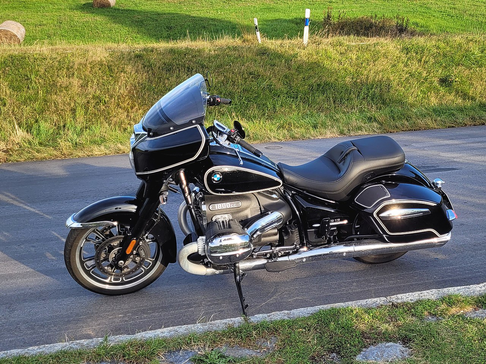

The R18 Family
Five variants, one engine. Every R18 uses the identical 1802cc Big Boxer — but the rider experience ranges from a stripped bobber to a fully-equipped grand tourer with Bowers & Wilkins audio.

BASE
Germany · 2020
BMW R18
The purist's choice — nothing extra, nothing hidden
Engine
1802cc Boxer
Power
91 hp
Torque
158 Nm
Weight
345 kg
Seat Height
690 mm
Tank
16 L
▸ Signature Details
Exposed Big BoxerChrome Spoke Wheels
Numbered EngineWide Front Tyre
Bobber Aesthetic
The base R18 is the most unadorned — no windscreen, no panniers, no extra fairing. Its purpose is to showcase the engine in the most direct way possible. Chrome engine cases and frame tubes are visible from every angle.
16-inch wheels front and rear, wrapped in wide whitewalled tyres (optional). The 130mm front and 180mm rear tyre dimensions give the R18 its characteristic wide-hipped stance.

CLASSIC
Germany · 2020
BMW R18 Classic
Bobber soul with 1950s tourer details
Engine
1802cc Boxer
Windscreen
Standard
Fenders
Valanced
Footboards
Standard
The Classic adds a small windscreen, valanced front fender, and rider footboards for greater long-distance comfort. Its styling references 1950s American touring motorcycles — the same era that inspired the original R18 concept.
Heated grips are available as standard options on the Classic, acknowledging that this variant's customers will use it for longer journeys than the base model's urban bobber riders.

BAGGER
Germany · 2021
BMW R18 B
The long-haul cruiser with hard luggage and full fairing
Fairing
Full bagger
Panniers
Hard, integrated
Audio
Optional
Weight
~380 kg
The R18 B (Bagger) is BMW's answer to the American touring cruiser — a full bagger fairing integrating hard panniers that open with a key fob, maintaining the clean silhouette while adding genuine practicality for multi-day journeys.
An optional audio system with speakers integrated into the fairing is available — the R18 B target customer is the American tourer who wants highway comfort and music without sacrificing the iconic Big Boxer presence.

GRAND TOURER
Germany · 2021
BMW R18 Transcontinental
BMW's most equipped touring cruiser — ever
Audio
Bowers & Wilkins
Top Case
Standard
Fairing
Full touring
Heated
Grips + Seat
The Transcontinental includes a Bowers & Wilkins audio system as standard — the first time this ultra-premium hi-fi brand has appeared on a production motorcycle. Four speakers deliver 40W of output, designed for highway listening levels.
With full touring fairing, integrated top case, hard panniers, heated seat, heated grips, cruise control, and a large windscreen, the Transcontinental is the most complete long-distance cruiser BMW has ever offered.

ROCTANE
Germany · 2022
BMW R18 Roctane
Roland Sands collaboration — blacked-out, aggressive, raw
Engine Finish
Blacked-out
Design By
Roland Sands
Footrests
Rear-set
Character
Performance
All the chrome of the standard R18 is replaced with blacked-out engine cases, matte-black frame tubes, and dark-finish cylinder heads. Roland Sands contributed the seat design, footrest position, and overall aggressive character.
The same 1802cc engine — but the Roctane experience feels fundamentally different. Rear-set footrests change body position; blacked-out aesthetics shift the bike's personality from luxury cruiser to urban custom. The engine remains identical — only the rider's context changes.